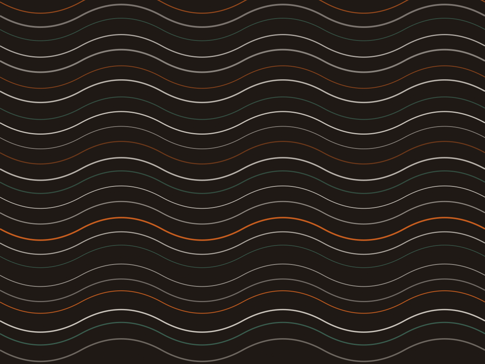

Mal passado
Centro vermelho, quente nas beiradas. Só fraldinha e contra-filé saem assim.
Brasa de eucalipto · desde 2017
Oito cortes na parede, com peso, ponto e preço. A picanha sai da grelha a 54 °C no centro e descansa oito minutos na tábua antes de ser fatiada.
Grelha1,2 m de brasa viva
Combustíveleucalipto de 3 anos, sem briquete
Salgrosso de parrilla, moído na hora
Pontoescolhido na mesa
Porção para uma pessoa com fome ou duas sem acompanhamento. O ponto vem escrito na comanda e vai assim para a grelha.
Picanha
Capa de gordura inteira, sal grosso e doze minutos de cada lado na brasa alta. Fatiada na frente de quem pediu.
R$ 96
Costela de boi
Seis horas em fogo baixo, com o osso para cima, e mais vinte minutos na brasa forte no fim. Sai desfiando no garfo.
R$ 88
Fraldinha
Membrana retirada na hora de temperar. Não vai na salmoura e recebe só sal e pimenta-do-reino moída.
R$ 72
Cupim
Oito horas tampado, depois 24 minutos direto na brasa para secar a casca. A gordura entremeada derrete na boca.
R$ 76
Contra-filé
Pescoço com a aba de gordura aparada. Vai à grelha sobre a parte grossa, para não passar do ponto.
R$ 79
Linguiça de pernil
Duas unidades, feitas pelo açougue da rua. Perna de porco, alho e páprica defumada, sem conservante.
R$ 42
Coração de frango
Seis unidades no espeto, temperadas com sal e limão siciliano. Ficam firmes, não secos.
R$ 32
Costela de porco
Cinco horas em fogo baixo e pincelada com mel e pimenta rosa na última meia hora, com o osso marcando o ponto.
R$ 64
Carne vem em tábua de madeira, com faca de mesa afiada. Não há rodízio e não há porção individual de 100 g: o corte é o que está escrito acima.
Trabalhamos com um termômetro de espeto no centro da peça. O que a mesa pede é traduzido em graus, e é assim que a cozinha confere.
Centro vermelho, quente nas beiradas. Só fraldinha e contra-filé saem assim.
Rosa no centro, suco claro. É o ponto padrão da casa para picanha.
Sem vermelho e ainda úmido. Pedido na mesa, feito na hora, sem ressentimento.
Entre a grelha e o prato
Oito minutos de descanso na tábua, coberto com papel-manteiga, antes de fatiar. É o tempo para o suco voltar da superfície para o meio da peça. Quem corta antes perde metade do molho na madeira.
A casa compra eucalipto cortado há três anos, com casca e sem tratamento. Acende com papel e cabo de vassoura, nunca com álcool.
A brasa é levantada às 14h para o serviço da noite e às 9h para o almoço de sábado.
Nada de gás ou briquete: a madeira queima em 40 minutos e vira 1,2 m de brasa viva.
Sal grosso de parrilla, moído grosso na hora, dosado com a mão no lado da carne.
A grelha sobe e desce para o calor chegar em quem precisa: peça grossa em cima, fina embaixo.

Tudo feito na casa, para duas pessoas dividirem sem briga.
Para dividir
Picanha de 400 g, linguiça, coração de frango, farofa e vinagrete. Serve três pessoas que comem carne de verdade, ou quatro com acompanhamento extra.
R$ 168
Tábua cheia: 600 g de picanha, costela de porco e cupim — R$ 246, para cinco pessoas.
“Pedi fraldinha mal passada e veio mal passada. Parece pouco, mas eu moro na quadra e sei o quanto isso é raro.” Sérgio Tavares, mora na Barão de Tatuí desde 2013
Rua Barão de Tatuí, 512 — Santa Cecília, São Paulo.
Porta de ferro na esquina com a Doutor Vila Nova. Metrô Marechal Deodoro a 550 m.